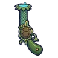
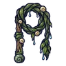

แพะภูเขา
มอนธาตุน้ำ Lv 48–58
เจอที่
| แมพ | โซน | Lv | ภูมิภาค |
|---|---|---|---|
| ยอดเขาหมอกเหนือ | 50–58 | ดินแดนเหนือ | |
| ยอดเขาหมอกเหนือ | สันเขาพายุหิมะ | 55–58 | ดินแดนเหนือ |
| ป่าสนหิมะ | 48–58 | ดินแดนเหนือ | |
| ธารน้ำแข็งแตก | 48–58 | ดินแดนเหนือ | |
| ธารน้ำแข็งแตก | น้ำตกน้ำแข็ง | 55–58 | ดินแดนเหนือ |
| สันเขาหิมะถล่ม | 48–58 | ดินแดนเหนือ |
ค่าสถานะตามเลเวล
| Lv | HP | ATK | DEF | MDEF | EXP | Job |
|---|---|---|---|---|---|---|
| 48 | 13,555 | 103–154 | 23 | 9 | 64 | 48 |
| 53 | 17,689 | 113–169 | 25 | 10 | 70 | 53 |
| 58 | 22,223 | 123–184 | 28 | 10 | 76 | 57 |
ตีด้วยธาตุไหนดี
แรงขึ้น: ลม ×1.75
เบาลง: ไฟ ×0.5 น้ำ ×0.25
วัตถุดิบที่ดรอป
| ของ | โอกาส | |
|---|---|---|
| เขาแพะน้ำแข็ง | 55% | 1 ชิ้น (15% ได้ 2) |
อุปกรณ์ที่ดรอป (9)
| ของ | โอกาส |
|---|---|
| 0.25% | |
| 0.12% | |
| 0.12% | |
 ปืนพกคู่กัปปะ | 0.12% |
| 0.12% | |
 แส้สาหร่ายหนองหมอก | 0.12% |
| 0.06% | |
| 0.06% | |
| 0.06% |
สกิล
พ่น (Lv 25+) · พ่น (Lv 60+) · กระโจน (Lv 60+)